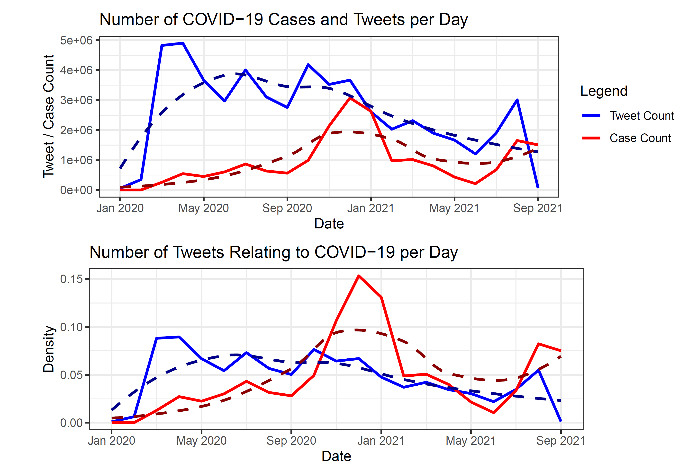

Project Portfolio
-
Receipt Matching Through Image Recognition
This project involved matching receipt images with user-provided data. First, by cleaning user data to address imperfections and then using computer vision to extract text from receipt images and convert it into OCR data. The cleaned user data and OCR data are transformed into a machine-readable format, and Levenshtein distances are used to measure text differences, primarily in address and vendor name, to identify potential user IDs. The project achieved an 89.5% accuracy rate on the test set through machine learning and gradient descent optimization of Levenshtein distance weights for price, date, and address.
-

The Ukrainian War Through the Lens of International Trade
A data-driven look at the economies of Ukraine and Russia over the past decade. This project explores imports/exports, foreign aid, sanctions, and more to gain insight into how the Russo-Ukrainian war has shaped each country's economy. This project features extensive data visualization built using the GGPlot2 and plotly packages.
-

Forecasting US Inflation
This project explores the economic factors driving inflation in the United States and attempts to forecast the US inflation rate a year in advance to August 2023 (a year from when the last data point occurs). Linear, ARIMA, and autoregressive neural network (NNAR) models are explored and in the end an ensemble NNAR model was found to produce the best results on the test set with an average prediction error of 0.3% and maximum prediction error of 0.9%. In the end, model correctly predicted that inflation would drop substantially and got within 0.8% of actual inflation rate in August 2023.
-
Cyclistic Bike-Share Customer Analysis
Analysis of a year of bike-share trip data containing over 1,000,000 observations. This analysis was directed at finding measurable differences between standard and premium customers. Attention was largely directed towards visualizing these differences and creating an easy to understand story behind the data. Project was completed as part of the capstone for the Google Data Analytics Certification program.
-

Global Research and Consulting Tableau
This Tableau dashboard was built for an education non-profit that aids school districts with at-risk youth. The dashboard helps summarize various important aspects of this process including the number of youth being referred to the non-profit's system over time, how long it takes to provide help, and the overall distribution of high versus low priority cases. Dashboard also features a full filtering system based on school district, region, and individual school.
-

COVID-19 and Twitter Sentiment Data
Analysis of official CDC COVID-19 case data and a dataset of tweets related to COVID-19 with 24 and 198 million observations respectively. SQL and R were integrated in order to efficiently access these large datasets. The project focused on how COVID-19 cases and tweets about COVID-19 were related to each other as well as how COVID-19 prevalence affected life expectancy and the prevalence of hypertension.
-

Chicago Project
This project looks at the demographic and economic makeup of Cook County, IL, and pairs this analysis with data about the public transportation infrastructure and usage. Project features various interactive maps that allow the data to be viewed on a highly granular yet easy to grasp basis. Finally, the data is used to forecast the household income, average rent, and average home value for every census tract in Cook County. This involves grappling with challenges of modeling hierarchical time series data with small amounts of data and explores the use of Linear, ARIMA, Bayesian Structural Time Series, and Autoregressive Neural Network models.